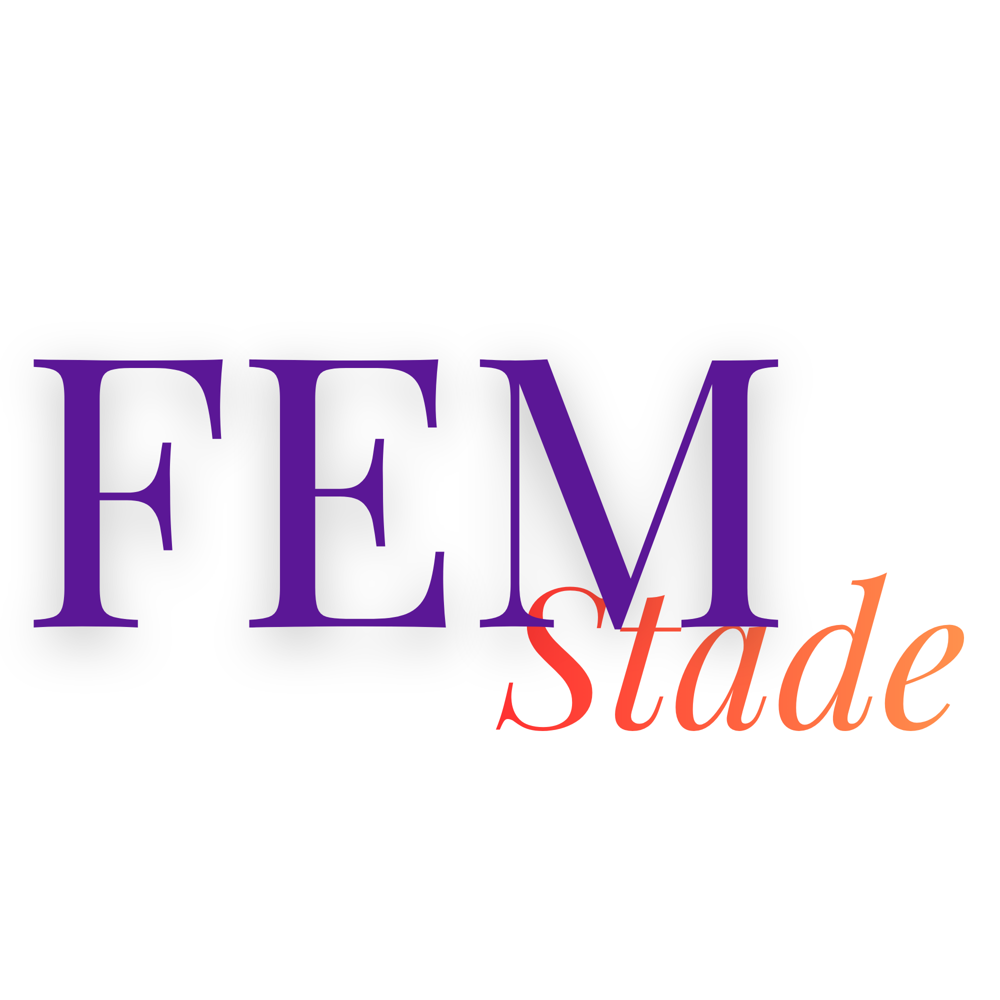

Feministischer Verein · StadeDu bist nicht allein. Hier findest du Anlaufstellen, die zuhören — kostenlos, anonym und ohne Voranmeldung.
Wird dein Handy kontrolliert? Lösche nach dem Anruf den Anrufverlauf oder ruf von einem anderen Telefon an. Du kannst diese Seite auch im privaten Modus öffnen — dann wird sie nicht im Browserverlauf gespeichert.